1 / 4 全体の流れ
AIに頼んで3Dを作る
― 箱1個から、自分の机をぐるっと回る映像まで
2026年11月22日の記録（勉強会の資料）。マウスもキーボードも触らず、言葉で頼むだけで、約2時間でここまで進みました。
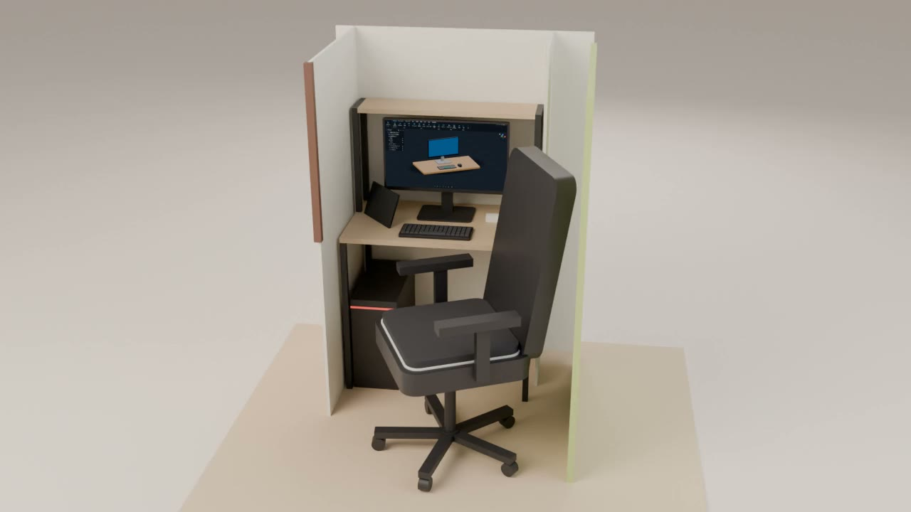
使った道具は3つ（どれも無料）
SolidCraft寸法の数字で形を作る「設計図ソフト」（3D CAD）。部品・金具・ケース向き。
MCPAIとアプリをつなぐ「差し込み口」の決まり。これがあるとAIがアプリを直接動かせる。
Blender色や光を付けて、絵や動画にするソフト。キャラクターや映像向き。
AIは Claude（Claude Code）。パソコンの中で動き、上の2つのソフトに命令を送ります。
作った順番
- つなぐ：AIが設計図ソフトを動かせるようにする
- はじめの箱：入門の手順どおりに箱を1個。寸法を変えて作り直しも試す
- 部品の練習：HDMI・DisplayPort のプラグ、マウス、キーボード、ディスプレイ
- 組み合わせる：机の上セット → 写真1枚から「うちのPCコーナー」を再現
- 映像にする：Blender に渡して、やわらかい光で一周する映像に
人がやったこと：言葉で頼む・写真を1枚送る・設定を変える時に「いいよ」と言う。
AIがやったこと：寸法の計算、命令の組み立て、できた形の確かめ、やり直し、記録。
AIがやったこと：寸法の計算、命令の組み立て、できた形の確かめ、やり直し、記録。
2 / 4 つなぐ・はじめの箱・部品の練習
まず箱を1個。それから部品を5つ
1つなぐ
- 設計図ソフトを入れる（配布元の合い言葉＝ハッシュで本物か確かめた）。
- ソフトの設定「AIからつなぐ」をオンにする。設定を変える所は、人の「いいよ」をもらってから。
- AIの返事が「アプリの画面とつながった」に変わり、画面の上に形が出るようになった。
2はじめの箱（入門の手順）
- 平らな面に下絵：60×40mm の四角と、直径12mm の円
- 押し出し 12mm（円は穴になる）
- 上の面を抜いて、くり抜く（壁の厚さ 2mm）
- 上のふちを丸める（半径 1.5mm）
- 床に直径 4mm の穴
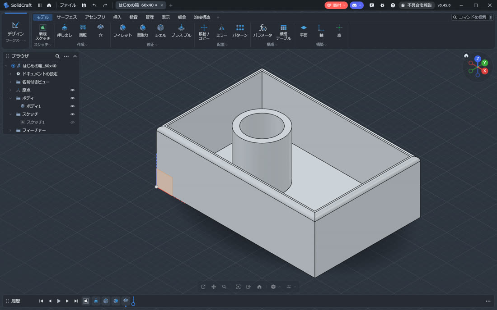
確かめ方のこつ：作る前に体積を計算しておき、作った後でソフトに測らせて比べる。箱は 9,173.04 mm³ でぴったり一致。「できました」の返事だけでは信じない。
設計図ソフトらしさ：押し出しの数字を 12→20 に変えるだけで、くり抜き・丸め・穴が自動で作り直された。
設計図ソフトらしさ：押し出しの数字を 12→20 に変えるだけで、くり抜き・丸め・穴が自動で作り直された。
3部品の練習（やさしい物から順に）
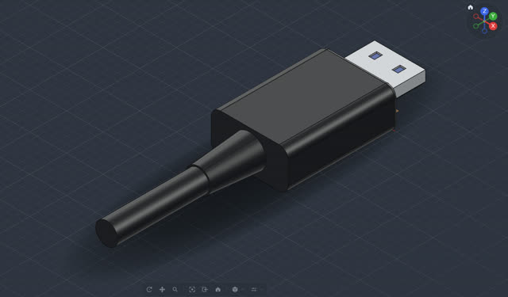
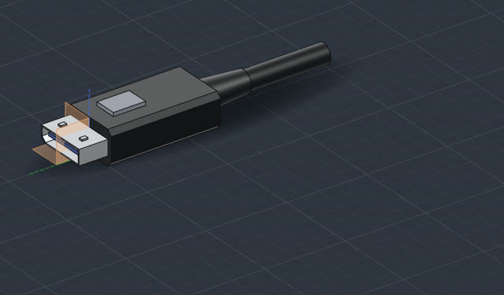
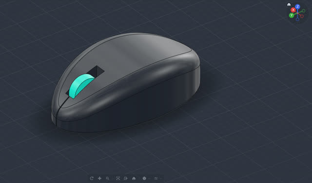
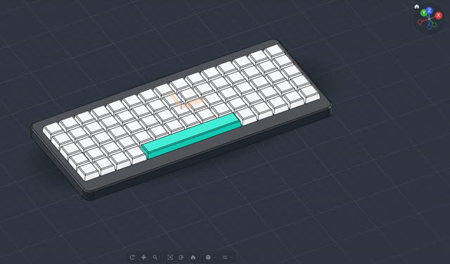
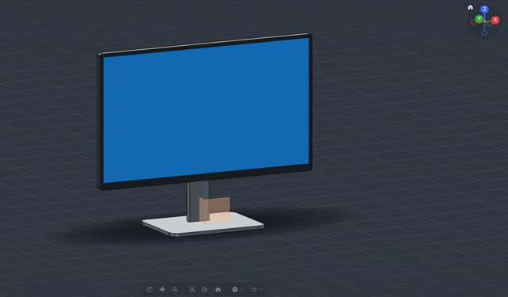
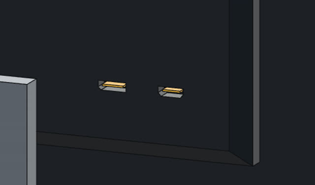
3 / 4 組み合わせる・写真を再現する
作った部品を使い回して、自分の机を再現
4机の上セット
ばらばらに作った ディスプレイ・キーボード・マウス を、共通のファイル（STEP）に書き出し、1つの設計に読みこんで机の板の上に並べた。色もそのまま付いて来る。
5写真1枚から「うちのPCコーナー」
机の写真を1枚送って「この写真に近い形を」と頼んだ。
- 使い回した物：ディスプレイ・キーボード・マウス
- 新しく足した物：木目の机と黒い枠、上の棚、椅子、机の下のパソコン本体、白い充電器、立てかけた黒い板、壁、緑のカーテン、カレンダー
- 遊び：模型の画面に、さっきの「机の上セット」の絵を貼った（写真と同じ入れ子）
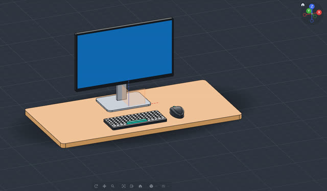
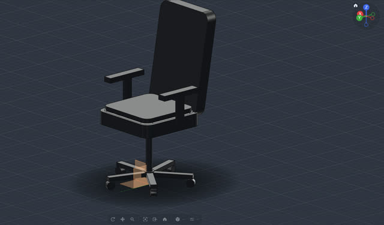
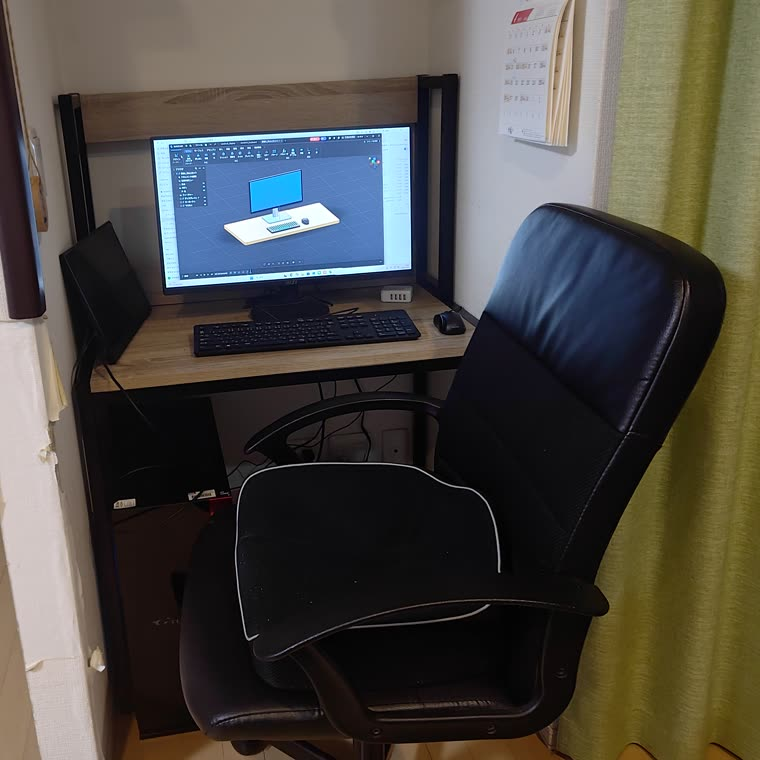
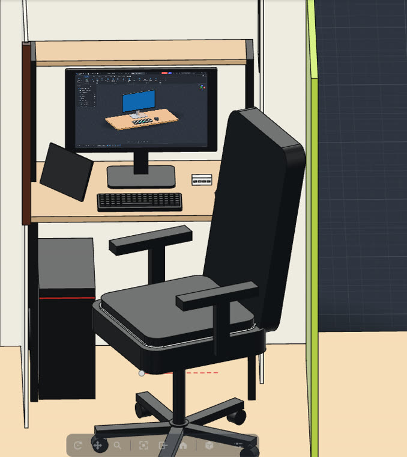
正直なところ：寸法は写真からの目分量で、実物は測っていない（机は 幅800×奥行480×高さ720mm と仮に置いた）。キーボードは練習の小さい物の使い回しで、実物より短い。コード類は作っていない。
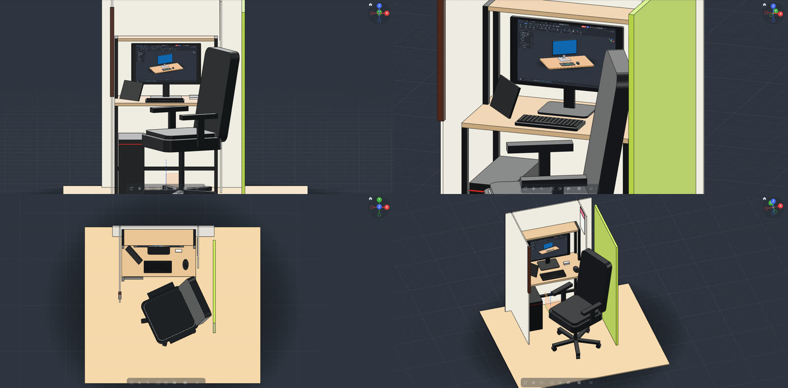
4 / 4 映像にする・学んだこと
Blender でやわらかい映像に。そして学んだこと
6映像にする流れ
設計図ソフトから模型を書き出す（glb という形）→ Blender を台本（Python）で動かす → 288コマを描く → 1本の映像（mp4）にまとめる。部品の名前も大きさも、そのまま Blender に入った。
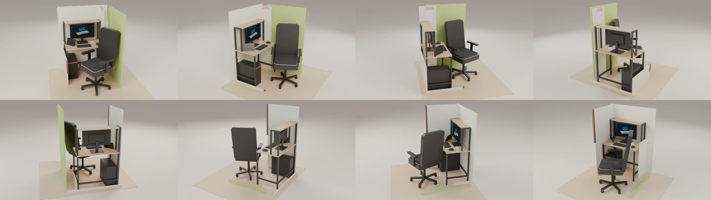
やわらかく見せた工夫
- 角を少し丸める（光がふわっと乗る）
- 大きな面の光を3つ置いて、影をぼかす
- 真っ黒を、やわらかい炭色にする
- 画面はほんのり光らせる
- 邪魔になる壁だけ、すーっと沈める
118部品の数
288描いたコマ
5分3秒描く時間
12秒映像の長さ
うまく行ったやり方・つまずいた所
- 箱・円柱・円すいの足し引きがいちばん速くて失敗しない。机も椅子もこれだけ。
- 同じ形は1個作って並べる（キー、椅子の脚）。
- 作った部品は使い回す。次の作品が速くなる。
- 毎回、計算と測った値を比べる。
- まとめて頼むと「全部できるか、全部やめるか」。最後の色の書き方1つで15工程が巻き戻った。
- 丸めの失敗は1回（プラグの持ち手の端）。範囲をせまくしたら通った。
- 曲面の丸めは重い（マウスは1工程15秒ほど）。
- 映像の最初の試しは、光が強すぎて白く飛んだ。
2つのソフトの違い
| SolidCraft（設計図） | Blender（映像） | |
|---|---|---|
| たとえると | 定規と設計図 | 粘土と絵の具 |
| 形の作り方 | 寸法の数字で決める | 網目を手で動かす |
| 得意 | 部品・金具・ケース・3Dプリント | キャラクター・絵・動画 |
| 直し方 | 数字を変えると後ろも作り直される | 形を直接いじる |
実際に頼んだ言葉（そのまま）
- 「30分ほど勉強のためにどんどん使ってみて。題材を決めて作成を繰り返して。マウス、キーボード、ディスプレイ、ディスプレイポートとかHDMIとか」
- 「うちのパソコンがこんな感じなんだけど、今使ったものを使って、プラスして、この写真に近い形を作り上げてもらってもいい？」（写真を1枚）
- 「今作ったやつを元に、今度はブレンダーを使って柔らかい感じの映像にして、そこの中をぐるっと回るようなのを作ってください」